Learned the fundamental sketching commands including Line, Rectangle, and Circle along with their subtypes. Explored selection techniques like double-clicking to select connected line objects in closed diagrams. Mastered construction lines by selecting a line and pressing X.
Completed 4 2D CAD drafting projects progressing from basic profiles to complex geometric constraints. Mastered applying Tangent Constraints, Circular/Radial Patterns, and construction reference geometry to create fully defined CAD sketches efficiently.
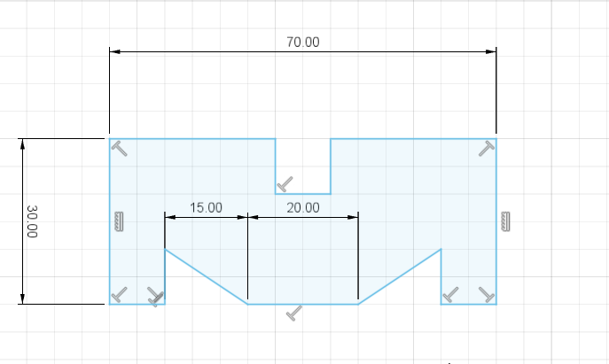
Project 1: Basic Profile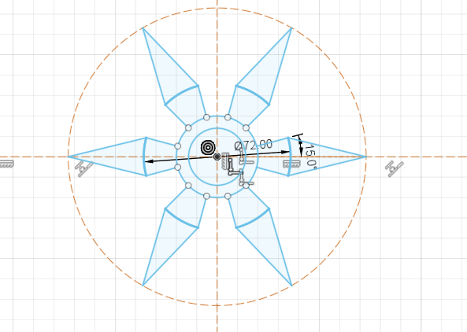
Project 2: Radial Star Pattern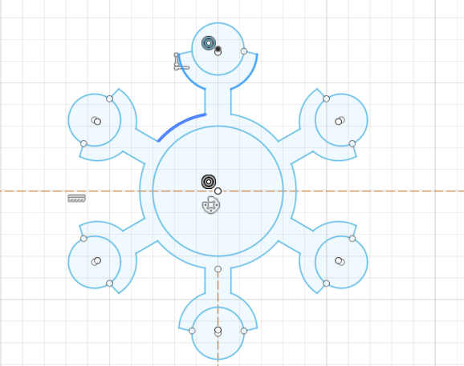
Project 3: Circular Node Array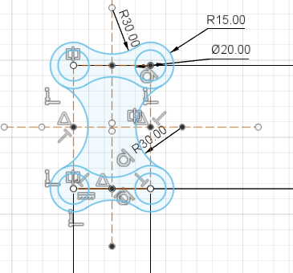
Project 4: Tangent Link ProfilePractice problems provided by seniors involving complex arc intersections, Fillets, and Tangent Arc constraints (drawing a computer screen and keyboard setup).
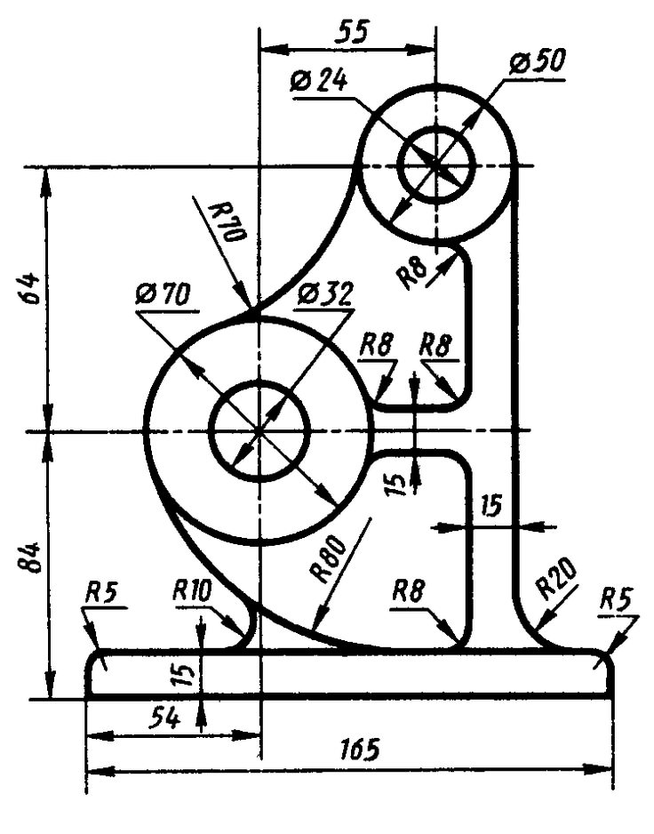
Practice Sheet 1: Bracket Support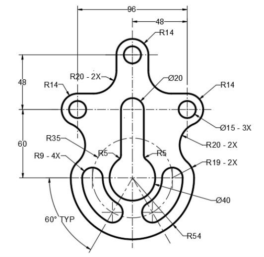
Practice Sheet 2: Symmetric Key PlateTransitioned from 2D sketching to 3D parametric design. Learned core 3D workflows including Part Design, Assembly Design, and Hybrid Design. Explored solid operations like New Body, Join, and Cut using Extrude. Mastered navigation shortcuts and surface feature tools like Emboss.
Pan: Click and hold Middle Mouse Button (Scroll Wheel)
Orbit: Shift + Click and hold Middle Mouse Button
Emboss: Raises or recesses a sketch profile relative to faces on a solid body.
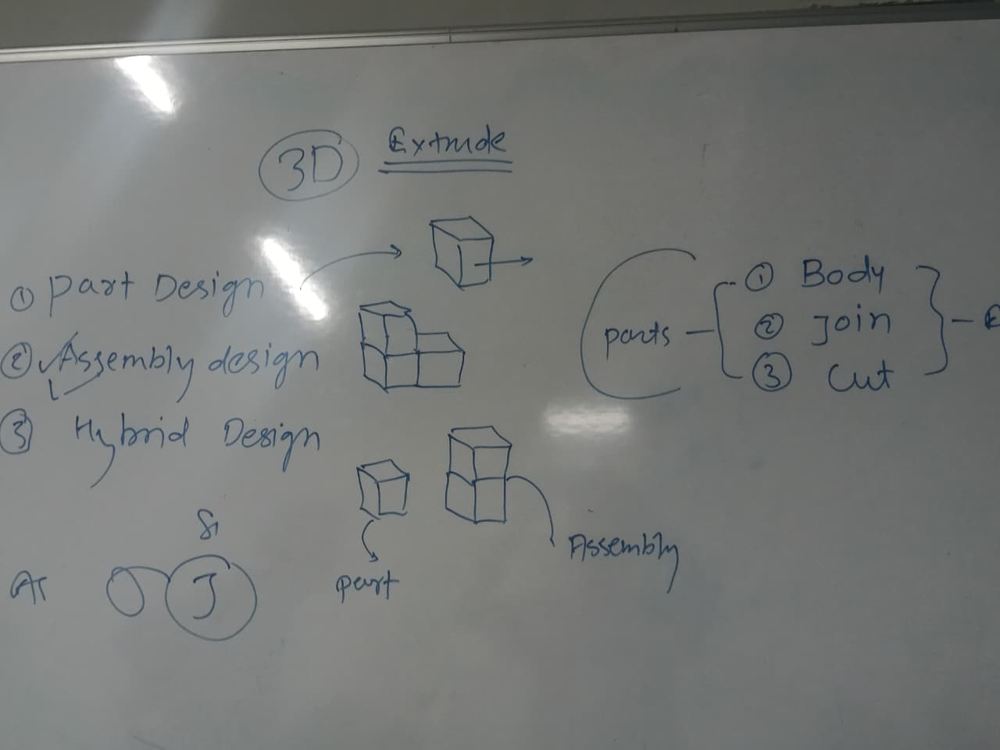
3D Concepts: Part, Assembly & Extrude Types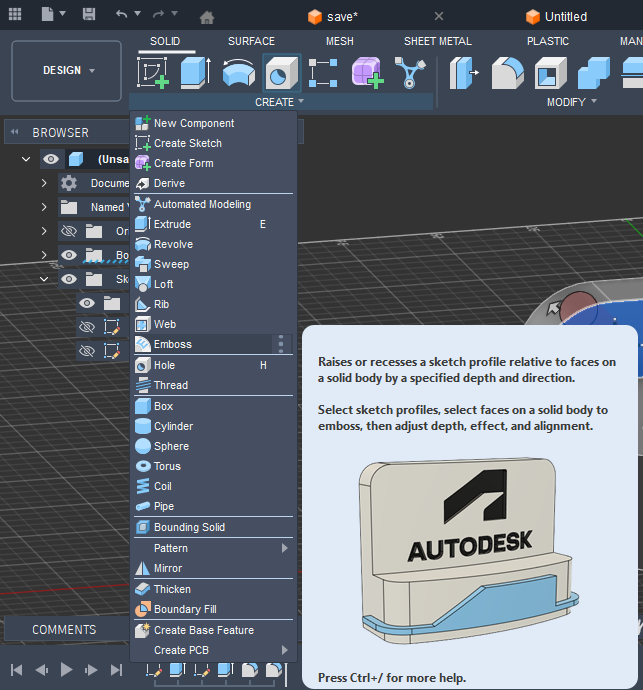
Autodesk Fusion: Emboss Feature Tooltip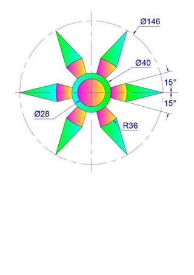
Radial Star Profile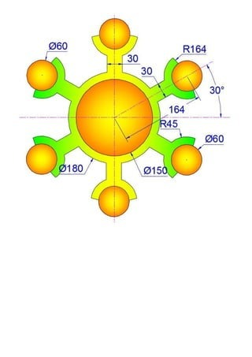
Circular Node Assembly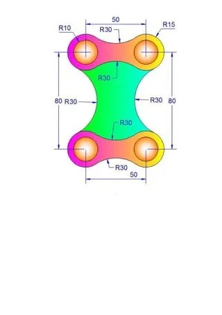
Symmetric Tangent LinkModeled fundamental mechanical fasteners in Autodesk Fusion. Explored thread creation, hex head extrusion, chamfering, and component assembly joints. Discussed the key structural and functional differences between external threads (Bolts) and internal threads (Nuts).
| Feature | Bolt (External Thread) | Nut (Internal Thread) |
|---|---|---|
| Threading | External helical threads on cylindrical shank | Internal helical threads inside central hole |
| Head/Shape | Integrated head (Hexagonal) with extended shank | Hexagonal or square block with hollow core |
| Function | Inserted through aligned unthreaded clearance holes | Screwed onto the bolt shank to clamp components |
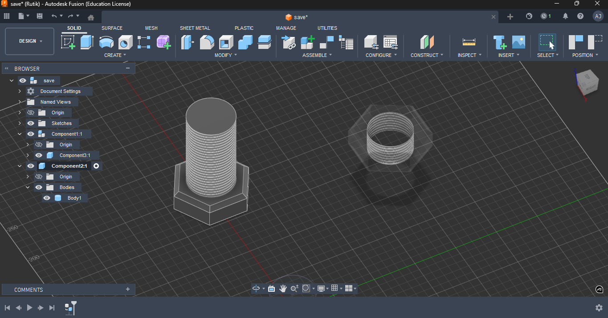
3D Modeling: Threaded Bolt & Translucent Nut Component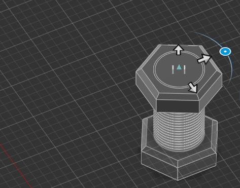
Assembly View: Nut Mated onto Bolt ShankExplored mechanical power transmission by designing spur gear profiles in Autodesk Fusion. Mastered pitch diameter calculations, tooth profile sketching, circular patterning of gear teeth, and setting up Motion Links and Revolute Joints to simulate gear rotation and mesh interactions.
Began modeling a custom 3D button component in Autodesk Fusion. Focused on applying smooth ergonomic contours using Fillets and Chamfers, creating thread/attachment geometries, and preparing multi-body components for assembly modeling and rendering.
Completed the multi-component push button switch assembly. Learned how to apply realistic material Appearances (A) to individual bodies for enhanced visual fidelity. Explored the Construct menu to generate reference planes, axes, and points for sketching at custom angles.
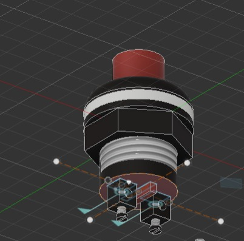
Final 3D Render: Threaded Push Button Switch with Applied Material Appearances & Terminals